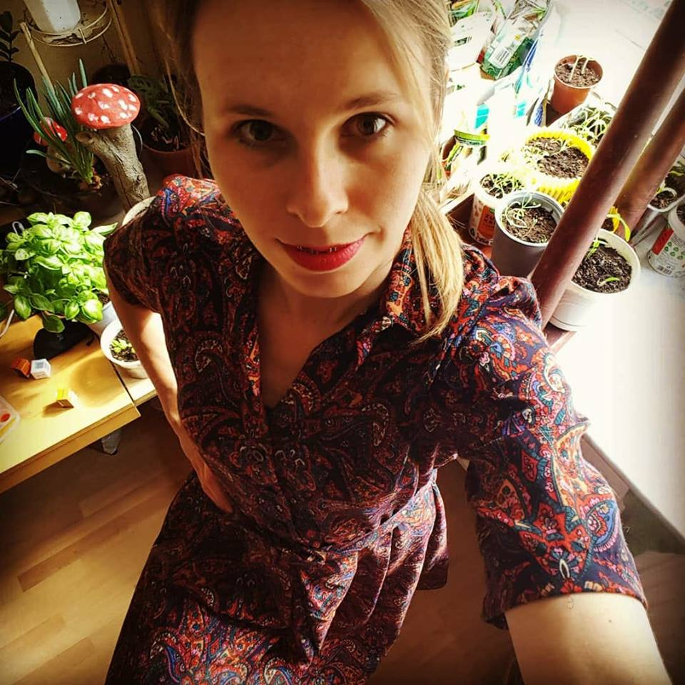

Aneta Włodarczyk
Python developer, Linux user,
student of psychotherapy
location
Warsaw, Poland
email/hangouts
anetka.wlodarczyk@gmail.com
github
@nausicaaa
cv
nausicaaa.github.io/
linkedin
Aneta Włodarczyk
Professional Programming Experience
Python Developer
,
Growbots
2016.05 - 2018.02
,
Poland, Warsaw
python36
microservices
Elasticsearch
PostgreSQL
scraping
Redis
RabbitMQ
Google BigQuery
Git
Docker
Celery
python27
growbots.com
, sales automation using large scala data collection and machine learning
General:
Worked on different projects and many technologies depending on current priorities, switching teams as needed.
Handled SMTP/IMAP, Gmail API, push notifications to reach customer's leads without being tagged as spam.
Supported Customer Success Team to solve problems for a particular client.
Maintained two versions of application through technology transition, migrated microservices and internal APIs.
Worked via MVP strategy, Scrum, Kanban and other techniques like V2MOM.
Worked with Data Science team on classification service.
Scraping:
Scrapy, XPATHs, CSS, RabbitMQ/Celery/Redis
Deovps and CI:
Git, Gitlab, Docker, Nomad, Google Cloud Service, Prometheus/Graphite, Consul
Other:
RabbitMQ
Celery - workers and queues, tasks
Flask
Some Front end:
Html, css, xpath
Self learnt:
Django and Django DRF - check projects on github, have in mind that they are abandoned, done just for learning purpose.
Linux tool set.
PyCharm
Other
Job
2013-2016
: Self-employed as an animal physiotherapist, working in veterinary clinics with dogs, cats and exotic animals.
Job
2011-2013
: Working as a clinical analyst and medical writer in Cracow, Warsaw and remotely.
Education
2004-2010
: Master degree in biology at Jagiellonian University, Cracow.
English
Proficient in speech and writing.
More about me
I'm studying
psychotherapy
I am a dog lover and I lift kettlebells.
Dumpster Scavenger. Surprised? Check my Instagram:
co_dzis_w_smietniku